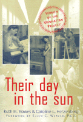

<body bgcolor="#FFFFFF" text="#000000" link="#0000FF" vlink="#CC0000" alink="#CC0000"><center><hr width="350" size="1" align="center" noshade>The hidden story of the contribution of women in the effort to develop the atomic bomb<hr width="350" size="1" align="center" noshade><p><a href="https://cdcshoppingcart.uchicago.edu/Cart/ChicagoBook.aspx?ISBN=9781566397193&&PRESS=temple" target="_top">Buy this book!</a> | <a href="https://cdcshoppingcart.uchicago.edu/Cart/Cart.aspx?PRESS=temple" target="_top">View Cart</a> | <a href="https://cdcshoppingcart.uchicago.edu/Cart/Cart.aspx?PRESS=temple" target="_top">Check Out</a></p><p></p></center><!--none//--><h1>Their Day in the Sun</h1>
<H2>Women of the Manhattan Project</H2>
<H2><!-- Foreword by Ellen C. Weaver, Ph.D. --></H2>
<h3>Ruth H. Howes and Caroline C. Herzenberg, foreword by Ellen C. Weaver</h3>
<P>cloth 1-56639-719-7 $55.50, May 00, <FONT COLOR=#990033>Available</FONT>
<br>paper 1-59213-192-1 $29.95, May 03, <FONT COLOR=#990033>Available</FONT>
<BR> 280 pp
6x9
44&nbsp;halftones
</P><BLOCKQUOTE><I>"Of the many women who contributed at Los Alamos National Laboratory, I remember with pleasure most of the physicists who I knew quite well. It is nice to read about Los Alamos as a success story."</I>
<BR>&#151<B>Dr. Edward Teller</B>, Senior Research Fellow, Hoover Institution<I></I></BLOCKQUOTE>
<p>The public perception of the making of the atomic bomb is yet an image of the dramatic efforts of a few brilliant male scientists. However, the Manhattan Project was not just the work of a few and it was not just in Los Alamos. It was, in fact, a sprawling research and industrial enterprise that spanned the country from Hanford in Washington State to Oak Ridge in Tennessee, and the Met labs in Illinois.
<p>The Manhattan Project also included women in every capacity. During World War II the manpower shortages opened the laboratory doors to women and they embraced the opportunity to demonstrate that they, too, could do "creative science." Although women participated in all aspects of the Manhattan Project, their contributions are either omitted or only mentioned briefly in most histories of the project. It is this hidden story that is presented in <i>Their Day in the Sun</i> through interviews, written records, and photographs of the women who were physicists, chemists, mathematicians, biologists, and technicians in the labs.
<p>Authors Ruth H. Howes and Caroline L. Herzenberg have uncovered accounts of the scientific problems the women helped solve as well as the opportunities and discrimination they faced. <i>Their Day in the Sun</i> describes their abrupt recruitment for the war effort and includes anecdotes about everyday life in these clandestine improvised communities. A chapter about what happened to the women after the war and about their attitudes now, so many years later, toward the work they did on the bomb is included.
<BR>&nbsp;<h2>Excerpt</h2><P>Excerpt available at <a href="http://www.temple.edu/tempress">www.temple.edu/tempress</a></p>
<BR>&nbsp;<h2>Reviews</h2>
<p><i>"I am thrilled to learn of so many of the remarkable women who contributed to innumerable aspects of [this] great enterprise. This book enables us to meet each other, to swap stories. The authors have done a superb job of detective work, tracking down an impressive number of them, more than 300. It is important to record and credit women's contributions to the social and technological history of the making of the bomb."</i>
<br><b>&#151Ellen C. Weaver</b>, Ph.D., Past President, Association for Women in Science
<p><I>"Quite interesting in what it reveals, both particularly about the chauvinism of the project’s male management and the naivete of professional and support staff regarding the harmful effects of nuclear materials. Recommended for academic history of science collections."</I>
<br>&#151<b><I>Library Journal</I></b>
<p><I>"Authors Howes and Herzenberg have done a remarkable job in synthesizing archived information on the women of the Manhattan Project and in bringing these women to life on the pages of their book."</I>
<br>&#151<b><I>AWIS</I> Magazine</b>
<p><I>"Painstakingly researched...this [book] provides a valuable beginning to the study of a previously neglected topic and contributes to our knowledge of the history of women in science."</I>
<br>&#151<b><I>Science Books and Films</I></b>
<p><i>"In the process of describing their backgrounds and experiences in nine chapters arranged by field (physicists, chemists, biologists, mathematicians, technicians, and others), Howes and Herzenberg give us some interesting asides on life and practice at these outposts."</i>
<br>&#151<b><i>The Journal of American History</i></b>
<p><i>"...this book contains much useful information about the lives and careers of the many women who worked in some way or another on the Manhattan Project. ...the research is sound and the book would be a valuable reference for a course on the WWII home front or twentieth century women's history."</i>
<br>&#151<b><i>The History Teacher</i></b>
<BR>&nbsp;<h2>Contents</h2><P>
<p>Foreword
<br>Prologue
<br>1. The Great Scientific Adventure
<br>2. The Founding Mothers: Pioneers in Nuclear Science
<br>3. The Physicists
<br>4. The Chemists
<br>5. Mathematicians and Calculators
<br>6. Biologists and Medical Scientists
<br>7. The Technicians
<br>8. Other Women of the Manhattan Project
<br>9. After the War
<br>Epilogue
<br>Appendix A: Female Scientific and Technical workers in the Manhattan Project
<br>Appendix B: Chronology
<br>References
<br>Index
<br>Photographs
</P><BR>&nbsp;<H2>About the Author(s)</H2>
<table><tr><td valign="top"><img src="/tempress/authors/1222_au1.gif" height="90" width="75"></td><td width="100%" valign="middle"><p><b>Ruth H. Howes</b> is George and Frances Ball Distinguished Professor of Physics and Astronomy at Ball State University. She is Vice President of the American Association of Physics Teachers and President Elect of the Indiana Academy of Science. She is also co-editor of <i>The Energy Sourcebook</i> and <i>Women and the Use of Military Force</i>.</P></td></tr></table><table><tr><td valign="top"><img src="/tempress/authors/1222_au2.gif" height="90" width="75"></td><td width="100%" valign="middle"><p><p><b>Caroline L. Herzenberg</b>, a physicist at Argonne National Laboratory in Illinois, is past president of the Association for Women in Science. She is author of <i>Women Scientists from Antiquity to the Present</i>.</P></td></tr></table>
<BR><H2>Subject Categories</H2>
<p><A HREF="/tempress/women.html" TARGET="_top">Women's Studies</a>
<BR><A HREF="/tempress/history.html" TARGET="_top">History</a>
<BR><A HREF="/tempress/science.html" TARGET="_top">Science</a>
</p>
<BR><h2 class="inpageheading">In the series</H2>
<P><I><a href="http://www.temple.edu/tempress/labor_change.html" onMouseOver="window.status='Click for other books in this series!'; return true;" onMouseOut="window.status=''; return true;" target="_top">Labor and Social Change</a></i>, edited by Paula Rayman and Carmen Sirianni.
</p><p><i>Labor and Social Change</i>, edited by Paula Rayman and Carmen Sirianni, includes books on workplace issues like worker participation, quality of work life, shorter hours, technological change, and productivity, as well as union and community organizing and ethnographies of particular occupations.</p>
<p align="center"><a href="https://cdcshoppingcart.uchicago.edu/Cart/ChicagoBook.aspx?ISBN=9781566397193&&PRESS=temple" target="_top">Buy this book!</a> | <a href="https://cdcshoppingcart.uchicago.edu/Cart/Cart.aspx?PRESS=temple" target="_top">View Cart</a> | <a href="https://cdcshoppingcart.uchicago.edu/Cart/Cart.aspx?PRESS=temple" target="_top">Check Out</a></p><p><font face="Arial" size="1"><a href="copyright.html" onMouseOver="window.status='Web Copyright Policy';return true;" onMouseOut="window.status=''" title="Web Copyright Policy">&copy;</a> 2015 <a href="http://www.temple.edu" target="new" onMouseOver="window.status='Link to Temple University home page';return true;" onMouseOut="window.status=''" title="Link to Temple University home page">Temple University</a>. All Rights Reserved. http://www.temple.edu/tempress/titles/1222_reg.html</font></p>